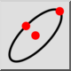

Elipse (Centrs, Punkts, Attiecība)
Rīkjosla / ikona:


Izvēlne: Zīmēt > Elipses > Elipse (Centrs, Punkts, Attiecība)
Īsais ceļvedis: E, P
Komandas: ellipse | ep
Apraksts
Zīmē elipses ar norādītu centru, lielo asi un mazo asi.
Lietošana
- Iestatiet elipses centru, izmantojot peli, vai ievadiet koordinātu komandrindā.
- Definējiet lielo asi, noklikšķinot uz ass gala punkta, kas ir punkts uz elipses. Varat arī ievadīt koordinātu komandrindā vai ievadīt leņķi un lielo rādiusu formātā @50<30, kur 50 ir lielais rādiuss un 30 ir elipses leņķis.
- Definējiet mazās ass gala punktu, kas arī ir punkts uz elipses.